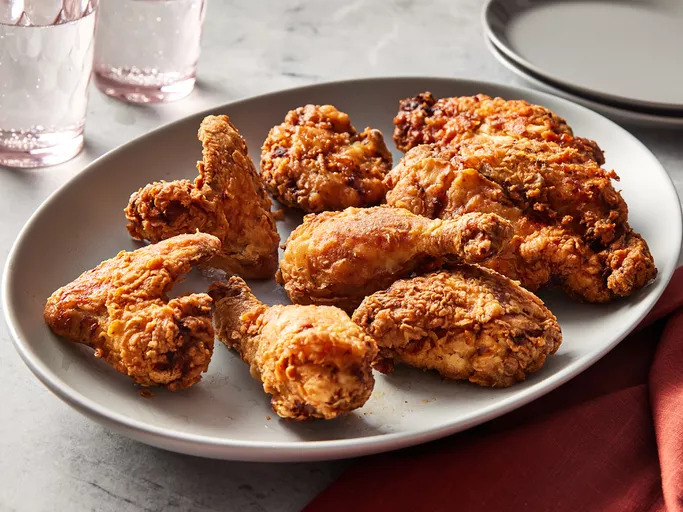

Fried Chicken

Description
This buttermilk fried chicken recipe results in chicken that’s wonderfully crispy on the outside, but tender and juicy on the inside.
Ingredients
- 1 (3 1/2) pound chicken, cut into 8 pieces
- 1 teaspoon black pepper
- 1 teaspoon salt
- 1 teaspoon paprika
- ½ teaspoon white pepper
- ¼ teaspoon dried rosemary
- ¼ teaspoon ground thyme
- ¼ teaspoon dried oregano/li>
- ¼ teaspoon dried sage
- ¼ teaspoon cayenne pepper
- 2 cups buttermilk
Flour
- 2 cups flour
- 1 teaspoon salt
- ½ teaspoon paprika
- ½ teaspoon cayenne pepper
- ½ teaspoon garlic powder
- ½ teaspoon white pepper
- ½ teaspoon onion powder
- 2 ½ quarts peanut oil for frying/li>
Steps
- Gather all ingredients.
- Toss chicken pieces, black pepper, salt, paprika, white pepper, rosemary, thyme, oregano, sage, and cayenne together in a large bowl.
- Stir in buttermilk until chicken is evenly coated. Cover and refrigerate for 6 hours.
- Combine flour, salt, paprika, cayenne, garlic powder, white pepper, and onion powder in a large shallow dish.
- Remove chicken from buttermilk and dredge each piece in seasoned flour; shake off any excess and transfer to a plate.
- Heat peanut oil in a large Dutch oven to 350 degrees F (175 degrees C).
- Add chicken pieces to the hot oil and fry for 10 minutes. Turn chicken pieces and fry for another 10 to 15 minutes. An instant-read thermometer inserted near the bone should read 165 degrees F (74 degrees C).
- Transfer fried chicken to a cooling rack set over a paper towel-lined baking sheet. Let sit for 10 minutes before serving.
- Enjoy!